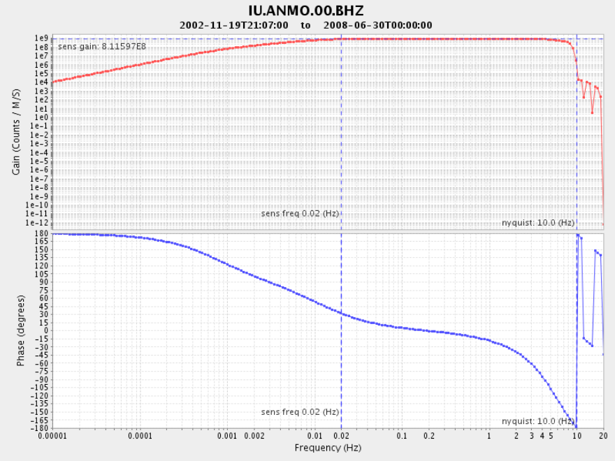

obspy.clients.iris.client.Client.evalresp¶
-
Client.evalresp(network, station, location, channel, time=UTCDateTime(2017, 9, 18, 1, 58, 23, 881149), minfreq=1e-05, maxfreq=None, nfreq=200, units='def', width=800, height=600, annotate=True, output='plot', filename=None, **kwargs)[source]¶ Low-level interface for evalresp Web service of IRIS (http://service.iris.edu/irisws/evalresp/) - release 1.0.0 (2011-08-11).
This method evaluates instrument response information stored at the IRIS DMC and outputs ASCII data or Bode Plots.
Parameters: - network (str) – Network code, e.g.
'IU'. - station (str) – Station code, e.g.
'ANMO'. - location (str) – Location code, e.g.
'00'. Use'--'for empty location codes. - channel (str) – Channel code, e.g.
'BHZ'. - time (
UTCDateTime) – Evaluate the response at the given time. If not specified, the current time is used. - minfreq (float, optional) – The minimum frequency (Hz) at which response will be
evaluated. Must be positive and less than the
maxfreqvalue. Defaults to0.00001Hz (1/day ~ 0.000012 Hz). - maxfreq (float, optional) – The maximum frequency (Hz) at which response will be
evaluated. Must be positive and greater than the
minfreqvalue. Defaults to the channel sample-rate or the frequency of sensitivity, which ever is larger. - nfreq (int, optional) – Number frequencies at which response will be evaluated.
Must be a positive integer no greater than
10000. The instrument response is evaluated on a equally spaced logarithmic scale. Defaults to200. - units (str, optional) –
Output Unit. Defaults to
'def'.'def'- default units indicated in response metadata
'dis'- converts to units of displacement
'vel'- converts to units of velocity
'acc'- converts to units of acceleration
If units are not specified, then the units will default to those indicated in the response metadata
- width (int, optional) – The width of the generated plot. Defaults to
800. Can only be used with theoutput='plot',output='plot-amp'andoutput='plot-phase'options. Cannot be larger than5000and the product of width and height cannot be larger than6,000,000. - height (int, optional) – The height of the generated plot. Defaults to
600. Can only be used with theoutput='plot',output='plot-amp'andoutput='plot-phase'options. Cannot be larger than5000and the product of width and height cannot be larger than6,000,000. - annotate (bool, optional) –
Can be either
TrueorFalse. Defaults toTrue.- Draws vertical lines at the Nyquist frequency (one half the sample rate).
- Draw a vertical line at the stage-zero frequency of sensitivity.
- Draws a horizontal line at the stage-zero gain.
Can only be used with the
output='plot',output='plot-amp'andoutput='plot-phase'options. - output (str) –
Output Options. Defaults to
'plot'.'fap'- Three column ASCII (frequency, amplitude, phase)
'cs'- Three column ASCII (frequency, real, imaginary)
'plot'- Amplitude and phase plot
'plot-amp'- Amplitude only plot
'plot-phase'- Phase only plot
Plots are stored to the file system if the parameter
filenameis set, otherwise it will try to use matplotlib to directly plot the returned image. - filename (str, optional) – Name of a output file. If this parameter is given
nothing will be returned. Default is
None.
Return type: numpy.ndarray, str or NoneReturns: Returns either a NumPy
ndarray, image string or nothing, depending on theoutputparameter.Examples
Returning frequency, amplitude, phase of first point.
>>> from obspy.clients.iris import Client >>> client = Client() >>> dt = UTCDateTime("2005-01-01") >>> data = client.evalresp("IU", "ANMO", "00", "BHZ", dt, ... output='fap') >>> data[0] # frequency, amplitude, phase of first point array([ 1.00000000e-05, 1.05599900e+04, 1.79200700e+02])
Returning amplitude and phase plot.
>>> from obspy.clients.iris import Client >>> client = Client() >>> dt = UTCDateTime("2005-01-01") >>> client.evalresp("IU", "ANMO", "00", "BHZ", dt)
(Source code, png, hires.png)

- network (str) – Network code, e.g.
{kind=link}
{kind=link}